I used a switch structure and an if statement to take eventreader's keycodes and access if they read an arrrow key or read that a key was unpressed


For the sound effects, I first declared them in the src of the audio html tag and gave them ids to be accessed by javascript
For the start button html I set an event to trigger my "click_start" function on click

In javascript for the button audio I made a function to start the game and play a sound effect when the button is clicked by storing the id of the audio I declared in a variable and using the play() function

For the Obstacle audio, I set an event listener to immedietly store the id of the hit sound effect in the variable hit_audio.
Then I put the play function for this audio inside the if statement checking if an obsticle has been hit.

However, I realized the audio would play forever if an object was hit. So I added a StopGame function into the GameArea to clear the interval so the game would stop and added it into the if statement (seen above)

After this I worked on a pause/continue button which was actually very simple. just set up a boolean variable and change its value via a function when the button is pressed. Then use an if statement to return from updating the game area if the pause button gets clicked and to resume if clicked again
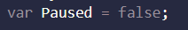 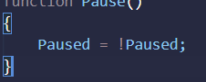 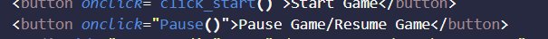 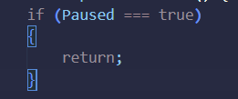Finally to finish off the base requirements of the game enhancement, I changed the bars to images of poles and gave the gamepiece a beginner animation to swap between 5 states depending on arrow key pressed by inserting the change into the switch and if statement I set up for arrow controls. I created a function in the game area to draw the image and also changed the update function to reflect this. However I noted a hitbox issue as the character was now a circle not a square.
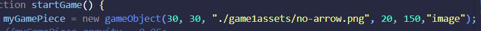 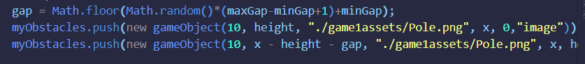 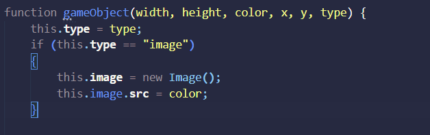 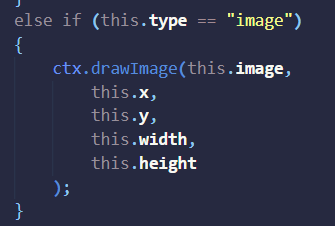
After this, I ended up changing the character to a helicopter that turns around if going right. Then I wanted to set up a looping sky background and some background music
To add the background music, I simpily used the "loop" attribute in html on the audio and set it to start when clicking the start game button and stop when the game is lost
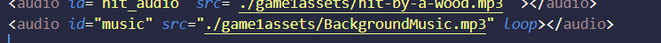As for the looping background, I made a new gameObject for it and gave it a new "type" of "background" so that I could draw it twice using an if statement for looping purposes. Then I updated the new pos method to reset the background position if it reaches the end. And finally, updated the update function to update every frame and set the speed.
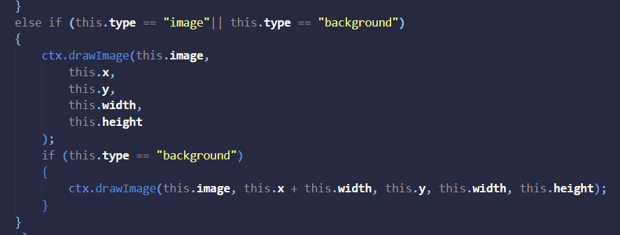 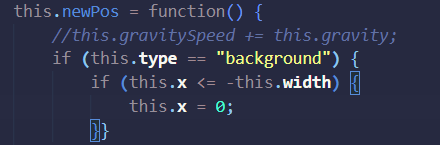
I then Decided to make the buttons disappear and appear as needed in the game and also add a restart button. So i first set the default values of the pause and restart buttons to not display and set the start button to display
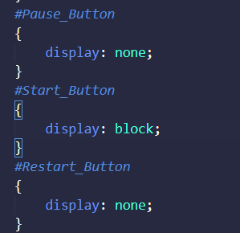Then I set triggers in the code to show and hide the buttons as needed (Show start only at the start hide others, Show Pause/Continue while the game is running, Show restart when player loses

Finally, I added a restart button which triggers upon clicking the restart button that resets all the game objects to what they were before starting and then calls the startgame function to restart the game. I also put the reading of all my audio in a DOM event listener so I can use them freely in the code nd moved my sounds that play on start to the start game function
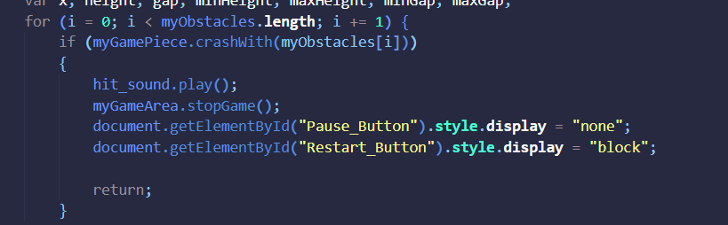 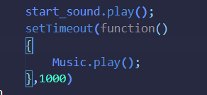 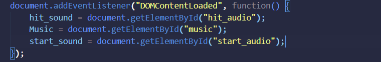Then I wanted to add an explosion after losing. I had some trouble getting the explosion to show up to replace the helicopter as it either didnt show up or showed up over the still visible helicopter when trying to directly replace it. So I created a new game object and set its position to be overtop the helicopter object on death (after messing with x and y for a bit. Also delayed the stop game function a little to allow the explosion to appear first
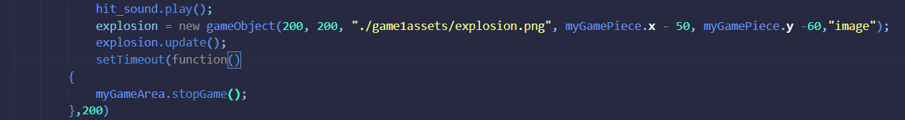I then quickly added a function to handle Pausing and unpausing the Music when Pause is pressed and inserted the function call into the onclick event on the Pause button.
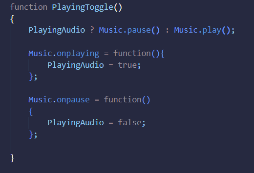Finally, I wanted to add something for the player to be engaged with while playing, so I thought of using the crashwith method to add coins or shooting to my game. Ultimately I chose coins for no reason other than prefrence. For this I created a coin array (following the obstacles example) and ran through a few trail and errors and eventually learned that the splice function exists to remove objects from an array which solved a problem I had where one coin could be collected many times while the player was passing through. I also added another text under score to display coins obtained to the player and a sound that plays upon collection
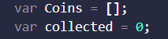 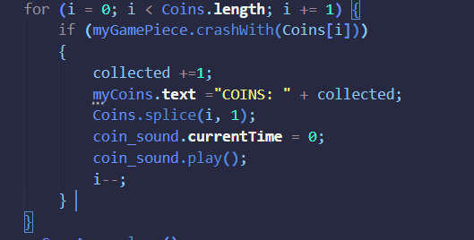As for coins spawning, I wanted it to be randomly in the middle of some but not all the obstacles, so I thought to use an if statement as well as a Math random to create a random number and if that number was below or equal to 0.6, a coin would spawn in the obstacle gap (60% chance). For the actual spawning I copy pasted from the obstacles and modified the size and y accordingly. I also copied the update loop from obstacles as it is the exact same for the coins
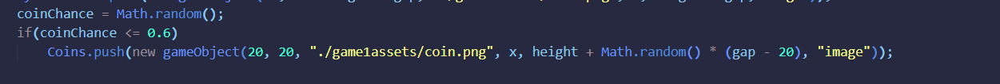
With my game enhancement, I created a game where a helicopter flies through the sky avoiding poles and collecting coins. The longer the player survives, the higher thier score goes and the more coins they collect, the higher thier coin count goes and each coin is worth 50 score.
The player has access to arrow key based controls and 3 buttons beneath the canvas to start, pause/continue, and restart the game. Furthermore, the sky background moves t showcase speed of the player. The coins spawn randmly at a 60% chance to be beetween each spawned pole object.
The game also features a crashing sound effect, coin collection sound effect, and start game sound effect as well as background Music that loops as the player goes.
During this project I had to teach myself javascript thorugh W2 schools and various youtube videos and essentially had to look up and find the keyword for every implementation I wanted to make. Starting out, I had many errors in my code and felt intimidated coding in a language ice never used before. The frame updates in particular still confuse me partially. However, through trial and error and many guides, I feel confident in my basic javascript abilities and can implement basic data structures way easier.
Furthermore, Github was also intimidating to me as I have never used it and with this project I now know how to do many things in a repository that I didnt before. The above documentation is all my changes and thought processes summed up and I feel accomplished learning the basics of javascript through this project. I hope to use ideas from this in our next project in konova